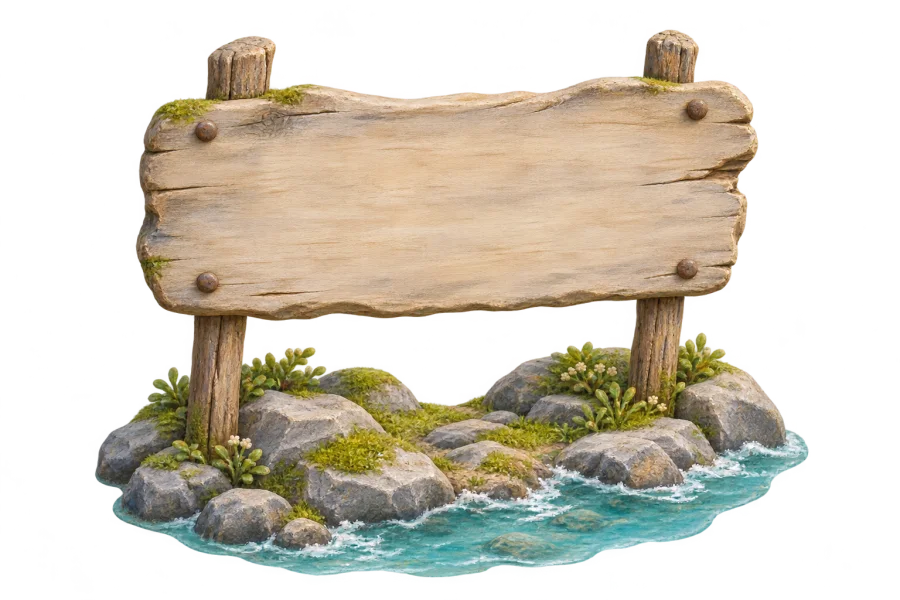

China
Ithaca · the journey & the letters
Somewhere along the way.
-
-
Hokkaido
where i learned to stay
living inside a crystal ball -
Korea
a hostel by the sea
how i turn a vague want into something real -
Europe · 2027
next stop
Follow the next chapter -
Japan
the anchor
A place to stay, someday.


Letters along the way.



Come along forthe next letter